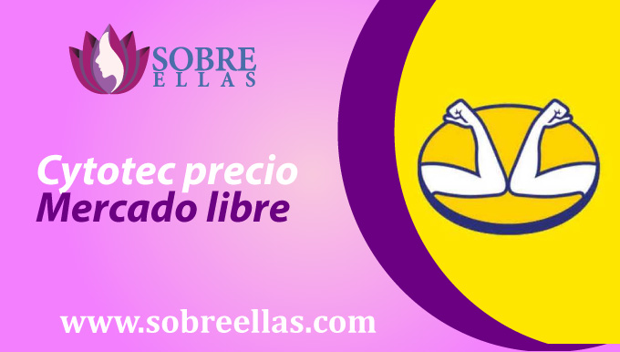
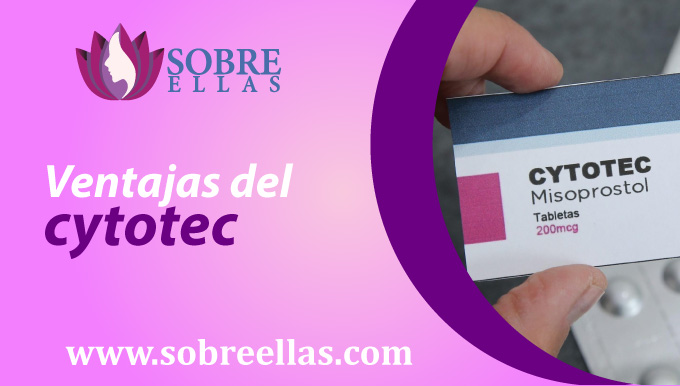

Cytotec Perú
-
addContenido
En el Perú existen diversos métodos abortivos disponibles en pastillas, como el uso de Cytotec. El cytotec es un medicamento que se usa para terminar el embarazo temprano. A menudo en combinación con otros medicamentos, como la mifepristona, para realizar un trabajo más completo. Es importante tener en cuenta que el misoprostol no es un medicamento que induce el aborto. Más bien, es un medicamento que ayuda a terminar el embarazo temprano.
¿Qué son las pastillas Cytotec en el Perú?

El cytotec peru en pastillas, son un medicamento usado normalmente por médicos ginecólogos y obstetras, su uso femenino y masculino a nivel mundial ha mejorado considerablemente, sobre todo al mencionar el primer caso. Este medicamento conocido también con el nombre de (misoprostol) tiene como uso combatir o tratar una variedad de afecciones médicas, incluidas las úlceras estomacales, la dismenorrea y el sangrado posparto. También se utiliza para interrumpir un embarazo, ya que posee la capacidad para inducir contracciones en el utero , lo que ha hecho que sea un medicamento ampliamente usadon en las complicaciones derivadas de las hemorragias durant la primera mitad del embarazo, como el aborto incompleto y el aborto retenido, en la inducción del trabajo de parto y en el control de la hemorragia posparto. El cytotec está disponible con receta médica en Perú, pero también existen pocos lugares que lo ofrecen sin receta. En Perú el misoprostol en pastillas se encuentra a la venta como medicamento genérico.
Cytotec Farmacias
Si está buscando una pastilla abortiva efectiva, de forma rápida y segura , el misoprostol podría ser la opción para usted. Está disponible sin receta en la mayoría de las farmacias y se puede usar para interrumpir un embarazo hasta las ocho semanas de gestación aproximadamente. El cytotec es un medicamento utilizado para inducir el parto y luego abortar un embarazo. Se vende bajo la marca Cytotec y también está disponible en forma genérica. En el Perú encontrarás variedad de precios tanto de forma online como presencial . Si decides optar por la primera forma para adquirirlo, deberás presentarte con tu receta médica donde figura la aprobación del especialista que te está atendiendo. Pero si aún eres menor de edad o no cuentas con esta receta , puedes adquirirla por medio online de forma más efectiva.
Cytotec precio de venta en Inkafarma
Cytotec puede ser la pastilla abortiva más eficaz y asequible para poner fin a un embarazo en el mercado peruano y a nivel mundial. El cytotec es un medicamento que se usa para inducir el parto. También se utiliza para tratar los calambres y la diarrea. En Inkafarma una farmacia en Peru, está disponible si presentas tu receta médica en forma genérica como de marca. La forma genérica suele ser menos costosa que la forma de marca. Lo puedes encontrar como pastilla abortiva sola o también está disponible en forma de píldora combinada con mifepristona. La decisión de usarla de manera individual o combinada dependerá de lo que te ordene tu especialista para evitar algún riesgo durante el proceso abortivo.
Cytotec precio Mercadolibre
Si está buscando una manera de interrumpir un embarazo por su cuenta, hay algunas opciones disponibles para usted. Una de estas opciones es el uso de pastillas abortivas, también conocidas como cytotec. El precio de las píldoras abortivas en el mercado libre puede variar, pero en general su precio es muy accesible a diferencia de otro proceso, todo dependerá de la dosis encargada por el médico para suministrar. Sin embargo, este precio está sujeto a cambios y puede variar dependiendo de dónde los compré. Un posible inconveniente de usar pastillas abortivas es que no siempre están disponibles en todos los lugares. Esto significa que es posible que tenga que viajar para encontrar una clínica o farmacia que los ofrezca. Otro posible inconveniente de usar píldoras abortivas es que pueden ser difíciles de usar si no sabes cómo hacerlo. Esto significa que es posible que deba consultar con un médico u otro profesional médico para usarlos con éxito. En general, las píldoras abortivas son una forma relativamente segura y efectiva de interrumpir un embarazo por su cuenta. Están disponibles en el mercado libre de forma rápida y segura al igual que en nuestra página, pero probablemente ellos te solicitan receta médica, así que consulta bien por si no la tienes, al momento de comunicarte .
Compra de Cytotec
La preocupación de haberte enterado que estas embaraza en un momento que no esperabas dentro de tus planes, te desespera y no sabes a donde acudir o qué hacer para no ser madre. Si ya tomaste tu decisión y estás en busca de métodos abortivos más eficaces y menos riesgosos, lo recomendable es el uso farmacológico para abortar. Estas pastillas abortivas podrás adquirirlas en cualquier centro o farmacia de salud con solo presentar tu receta médica, en caso no cuentes con ella, puedes ponerte en contacto con nosotros mediante nuestra página, para que te ayudemos sin necesidad de tener que solicitarla.
Ventajas del Cytotec
Si usted está considerando el aborto, hay algunos factores a considerar. Uno de los más importantes es el tipo de aborto que desea someterse. Hay tres tipos principales de abortos: aborto farmacologico (usar pastillas abortivas para terminar un embarazo), aborto quirúrgico (usar herramientas para terminar un embarazo) y aborto natural (aborto espontáneo). Una opción para el aborto farmacologico es el uso de la medicación abortiva, cytotec. Este es un medicamento que es eficaz para poner fin a un embarazo. Cytotec está disponible en dos formas: como una tableta tomada por vía oral y como un kit, que incluye instrucciones para el uso del medicamento y un suministro de tabletas. Cuando realice el consumo de esta pastilla para abortar, deberás tomar el medicamento según las indicaciones de su médico. Cytotec es efectivo para terminar un embarazo dentro de las 48 horas, pero es importante recordar que es solo una solución temporal. Si está usando cytotec, es importante tener en cuenta que puede experimentar algunos efectos secundarios. Estos efectos secundarios pueden incluir calambres, náuseas, vómitos y diarrea. También debe tener en cuenta que cytotec no es un medicamento abortivo 100% efectivo y puede no funcionar para todas las mujeres. Adicional a eso, existen muchos beneficios al usar Cytotec como metodo abortivo para el embarazo, siendo una forma muy eficaz de interrumpir un embarazo. En ensayos clínicos, Cytotec resultó ser 98% eficaz para interrumpir un embarazo. Además, es seguro de usar. Hay muy poco riesgo de efectos secundarios al tomar Cytotec, y la mayoría de las mujeres no experimentan efectos adversos.
Aborto Incompleto con Cytotec
Existe una variedad de síntomas que pueden presentarse después de un aborto incompleto con pastillas abortivas cytotec, tanto conocidos como desconocidos son muy pocos los casos. El síntoma más común de aborto incompleto son los calambres. Esto ocurre en aproximadamente la mitad de las mujeres que presentan un aborto. Los calambres pueden ser leves o graves y pueden durar horas o días. Otros síntomas de aborto incompleto incluyen flujo vaginal, náuseas y vómitos. Enotros casos, el aborto incompleto puede causar un aborto espontáneo. Algunos de los síntomas desconocidos que pueden ocurrir después de un aborto pueden incluir:
1. Infecciones . Luego de realizarte un aborto, es importante tomar medidas necesarias para evitar cualquier infección. Esto incluye evitar la actividad sexual hasta que todo el proceso haya terminado, tu dejes de sangrar y sientas que tu cuerpo ya está recuperado por completo. Lo ideal es realizar actividades o guardar reposo según lo que te indique el especialista y tomar antibióticos según lo prescrito.
2. Sangrado excesivo. Si experimenta sangrado excesivo, mayor a que el médico te indico previo al proceso, es importante acudir a una revisión médica lo antes posible. Ya que podría ser una alarma indicativa de una complicación y puede requerir antibióticos de mayor efecto o cirugía.
3. Muerte. Aunque poco comun, la muerte puede presentarse después de un aborto y es una de las muchas cosas que hacen desanimar a toda chica al escuchar la palabra aborto. Y no, aborto no es sinonimo de muerte, todo dependera del especialista que lleve tu caso, de la informacion y obediencia al pie de la letra que recibas, de la realizacion del proceso, de tu estado actual de salud, del tiempo de gestacion con el que cuentes, del cuidado pre, durante y despues que le des a tu cuerpo.
Si aún así llegas a experimentar algún signo o síntoma que sugiera que puede estar experimentando una emergencia médica, vaya al hospital.
¿Donde abortar con Cytotec?
Con Cytotec quien decide donde abortar eres tú, no es necesario dirigirse a un hospital o clínica para que el proceso se lleve adelante. Recuerda que el primer paso a seguir consiste en encontrarte en un lugar tranquilo y cómodo, donde se llevará a cabo todo el proceso. En eso el médico a cargo te da la libertad completa de elegirlo, ya que el proceso a realizar es no invasivo. Lo que más se busca con todo esto, es que durante el proceso abortivo con pastillas cytotec, usted se encuentre cómoda y tranquila en plena privacidad de tal manera podrá seguir al pie de la letra cada una de las indicaciones del médico, sin ponerse nerviosa u olvidarse, logrando así un proceso completo y exitoso.
Número de pastillas Cytotec a consumir
La dosis va a variar según el tiempo de gestación que tengas, es por eso que lo recomendable siempre es consultar previamente con tu médico a cargo.
La dosis común que suelen recomendar son las de 12 pastillas abortivas que se irán intercalando en 3 dosis cada 3 horas
Efectos secundarios
Las pastillas abortivas cytotec pueden causar varios efectos secundarios, los más comunes de los cuales son diarrea y vómitos. Algunas personas también experimentan dolor, fiebre e ictericia. Si experimenta algún efecto secundario mientras está tomando cytotec , debe comunicarse con su médico. Algunos de los efectos secundarios más comunes del cytotec incluyen calambres, diarrea y vómitos.
Seguridad al usar Cytotec
Sí, el cytotec es generalmente seguro de usar. El cytotec es seguro de usar en mujeres que desean interrumpir un embarazo.Sin embargo, como cualquier medicamento, hay posibles efectos secundarios que pueden ocurrir y existen algunas cosas importantes que debes tener en cuenta si elige usar este medicamento. En primer lugar, el cytotec puede causar efectos secundarios. Estos efectos secundarios pueden variar dependiendo de la persona, pero generalmente pueden incluir náuseas, vómitos, diarrea, calambres y fiebre. En segundo lugar, una vez que se toma este medicamento, deberá tomarse en 3 repetidas veces para que complete el efecto deseado. Finalmente, la pastilla abortiva misoprostol no siempre funciona tan bien como debería. Si no termina su embarazo dentro de las 24 horas después de tomar las pastillas, es posible que deba tomar otra dosis de misoprostol para inducir el parto. El cytotec es un medicamento seguro y efectivo para interrumpir un embarazo. Si está considerando usarlos, asegúrese de discutir los riesgos y beneficios con su médico.
Ergotrate precio perú
Al hablar de ergotrate, podemos verlo desde distintos puntos de vista y diversos significados. El primero y más conocido, es que se le considera un es un nuevo y revolucionario suplemento de pérdida de peso que se está convirtiendo rápidamente en uno de los favoritos de las personas de todo el mundo. Este producto se compone de ingredientes naturales que están diseñados para ayudarle a perder peso y mejorar su salud en general. Gracias a sus ingredientes ayuda a reducir sus niveles de colesterol y mejorar la salud de su corazón. Este producto es perfecto para las personas que buscan una forma natural de perder peso, y también es perfecto para las personas que buscan una manera de mejorar su salud en general. Si usted está buscando un suplemento de pérdida de peso que sea eficaz y seguro, entonces usted debe considerar el uso de ergotrate. El ergotrate es perfecto para personas de todas las edades, y se está convirtiendo rápidamente en uno de los favoritos de personas de todo el mundo. El segundo motivo por el que se ha vuelto muy conocido, es debido a su uso para disminuir el sangrado que viene del útero, generando contracción en el útero de forma intensa y constricción de los vasos sanguíneos, lo cual detiene de forma eficiente los sangrados.